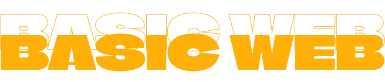

02
VARIGHED: 3 UGER
(02/09/24 - 20/09/24)


LÆRINGSMÅL
- Introduktion til HTML
- Introduktion til CSS
- Grids og Flexboxes
- Media Queries & responsivt webdesign
- 4 stile (Retro vs, Futuristisk, Modernisme vs. Postmodernisme)
- Webfonts & unikke fonts
- Gestalt designlove
- Validering & troubleshooting
Dette tema handlede om at lære begyndelsen af kodning og konventionel webdesign. Vi blev undervist i at designe med en "mobile first"-tilgang, ved hjælp af responsivt webdesign og medieforespørgsler, så vores projekter kunne fungere problemfrit på både mobil- og desktopenheder.
Vores første introduktion til designpsykologi var gennem Gestalt-lovene, som vi lærte at anvende i vores design for at vide, hvornår vi skulle følge lovene, og hvornår vi bevidst skulle bryde dem.
Det afsluttende projekt for dette tema var en simpel hjemmeside om computere, som vi lavede i HTML og CSS baseret på et wireframe og indhold, vi fik udleveret. Dette var også vores optagelsesaktivitetsprøve.